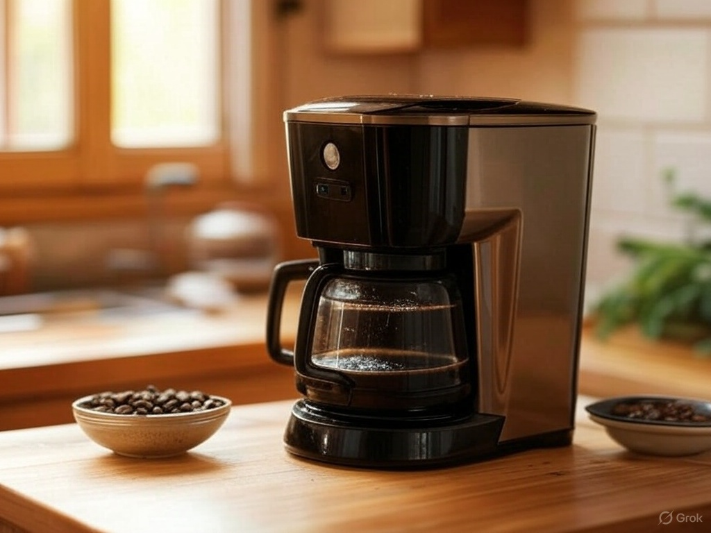

El método de goteo se caracteriza por su enfoque en el vertido controlado del agua a través del café molido. Aquí el agua caliente se vierte sobre el café de molido, por lo general, medio, y la gravedad se encarga de dirigirla a través de un filtro. Este proceso permite una extracción limpia y precisa, resaltando las sutilezas y complejidades del café.
V60
La Hario V60 es un método de preparación de café de goteo de origen japonés, desarrollado por la
empresa Hario en la década de 2000. Su diseño distintivo se basa en un cono con un ángulo de 60
grados, de ahí su nombre, e incorpora estrías en espiral en su interior que favorecen la expansión
del café durante la extracción. Se diferencia de otros métodos de filtrado por su gran orificio en
la base, que permite un mayor control sobre el flujo de agua y la velocidad de extracción,
influyendo directamente en el perfil de sabor.
Este método destaca por su claridad y limpieza en la taza, resaltando las notas más delicadas y
brillantes del café. La molienda recomendada es media a media-fina, y el tiempo de preparación varía
entre 2:30 y 3:30 minutos. Para su correcto uso, se coloca un filtro de papel en el cono y se
enjuaga con agua caliente para eliminar posibles sabores residuales y calentar el equipo. Luego, se
añade el café molido y se inicia el vertido en movimientos circulares, comenzando con una
preinfusión de 30 a 45 segundos para permitir la liberación de gases. Posteriormente, se continúa
agregando agua en intervalos controlados, asegurando una extracción uniforme. Una vez finalizado el
proceso, el café está listo para servirse, ofreciendo una bebida con cuerpo ligero, acidez
equilibrada y notas bien definidas.
Chemex
La Chemex es un método de preparación de café por goteo creado en 1941 por el químico alemán Peter
Schlumbohm. Su diseño icónico combina funcionalidad y estética, con una elegante jarra de vidrio en
forma de reloj de arena y un collar de madera que actúa como aislante térmico. Su particularidad
principal radica en el uso de filtros de papel gruesos, que retienen más aceites y sedimentos que
otros métodos de filtrado, lo que da como resultado una taza limpia y de sabor suave.
Este método se caracteriza por resaltar las notas brillantes y afrutadas del café, con una textura
ligera y una claridad excepcional. La molienda ideal es media-gruesa, similar a la sal gruesa, y el
tiempo de preparación suele oscilar entre 3:30 y 5 minutos. Para su correcta utilización, se coloca
un filtro de papel en la parte superior de la jarra y se enjuaga con agua caliente para eliminar
residuos y precalentar el recipiente. Luego, se añade el café molido y se inicia la preinfusión
vertiendo una pequeña cantidad de agua caliente en círculos sobre el café, permitiendo que libere
gases durante unos 30 a 45 segundos. Posteriormente, se continúa con el vertido en etapas
controladas, asegurando una extracción uniforme. Una vez completado el proceso, el café se sirve
directamente desde la jarra, ofreciendo una bebida equilibrada, limpia y con una acidez bien
definida.
Cafetera Electrica
La cafetera de café filtrado eléctrica casera, un invento que revolucionó la preparación del café en el hogar, tiene sus raíces en las primeras cafeteras de goteo del siglo XX. Su diseño característico consiste en un recipiente con una resistencia eléctrica que calienta el agua, un filtro donde se coloca el café molido y una jarra para recoger el café infusionado. Este método se distingue por ser un proceso de goteo, donde el agua caliente pasa a través del café molido, extrayendo los sabores y aromas, y filtrándose a través de un filtro de papel o malla. El resultado es una bebida limpia y suave, con menos sedimentos que otros métodos. El tiempo de preparación varía según el modelo, pero generalmente oscila entre 5 y 10 minutos. Para usarla correctamente, se llena el depósito con agua fría, se coloca el filtro con el café molido en su lugar, se enciende la cafetera y se espera a que el agua caliente pase a través del café y se recoja en la jarra. Algunas cafeteras ofrecen funciones adicionales, como programabilidad, temporizadores y placas calefactoras para mantener el café caliente. Los beneficios de la cafetera de café filtrado eléctrica casera incluyen su facilidad de uso, la capacidad de preparar grandes cantidades de café de una sola vez y la consistencia en el sabor.